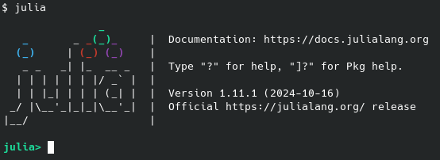
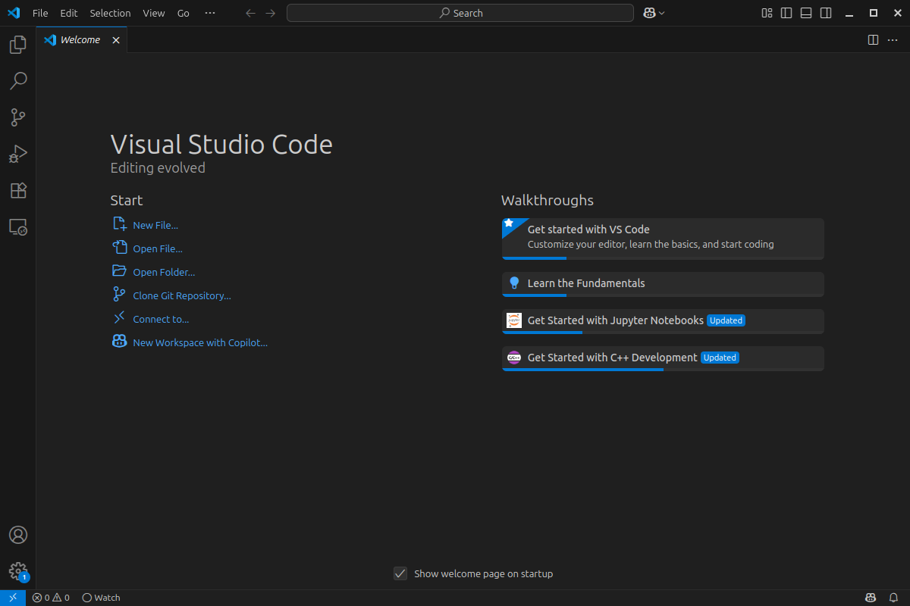
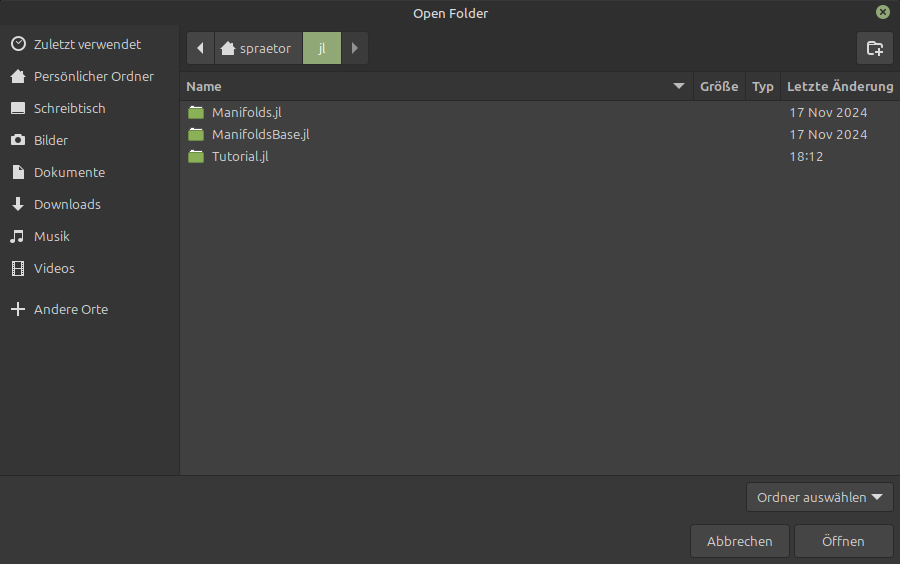
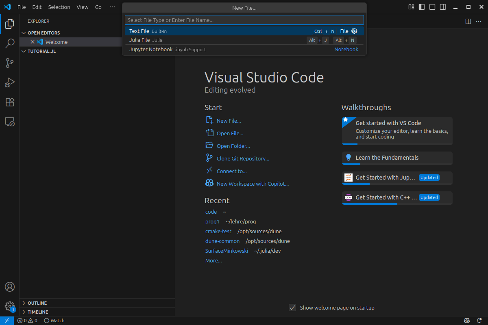
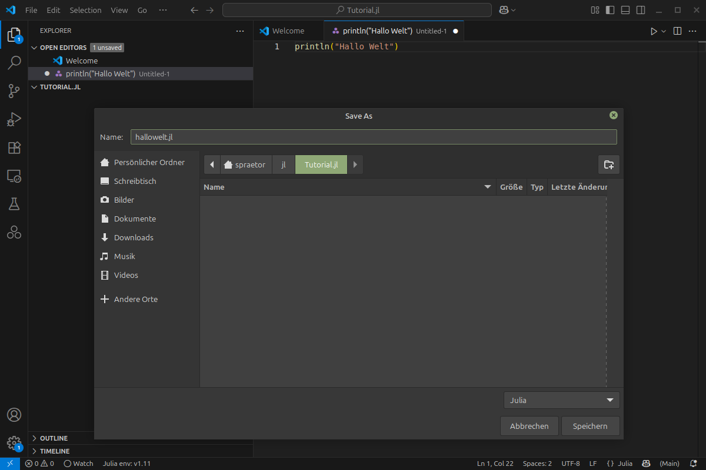
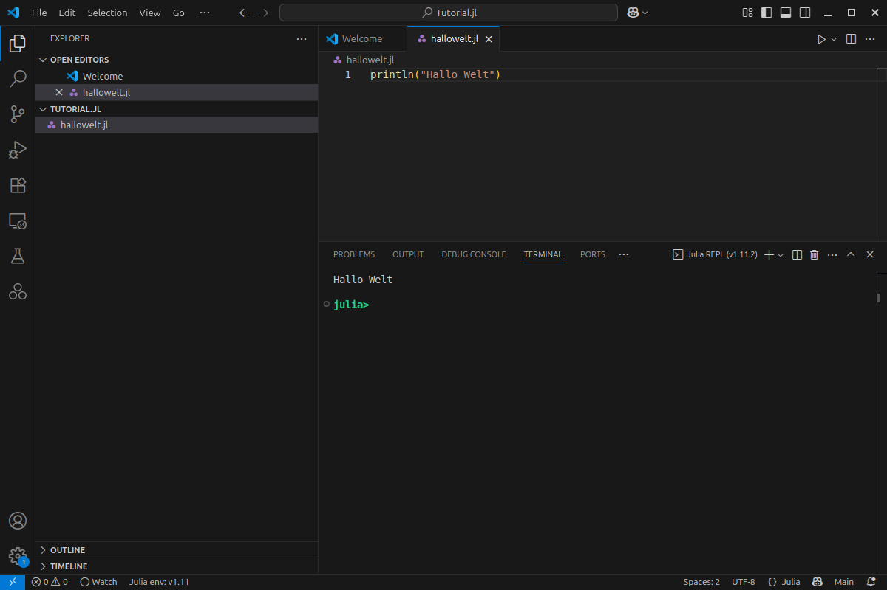
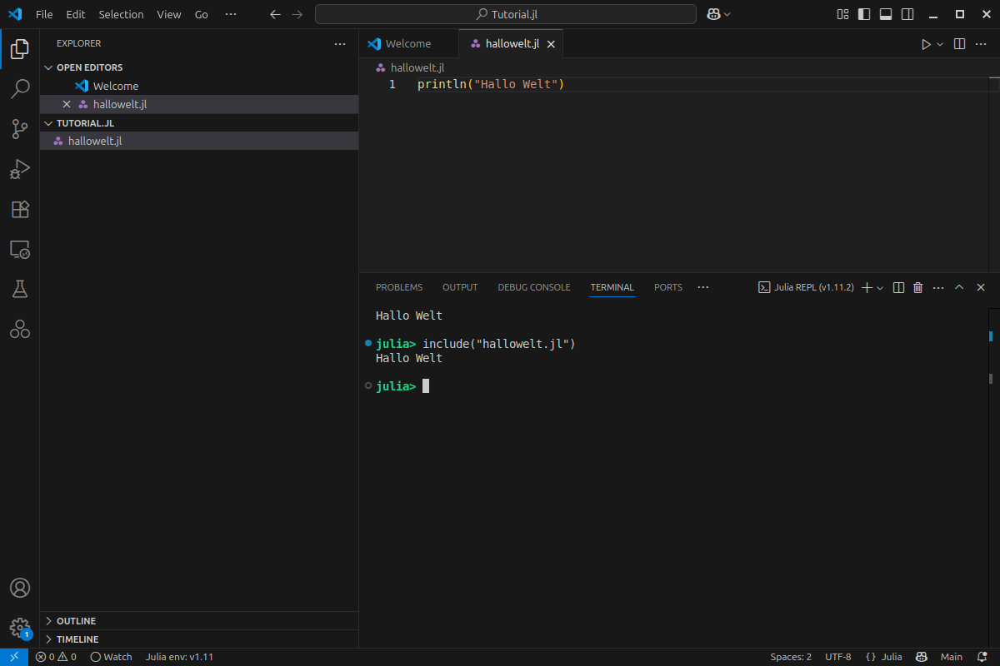
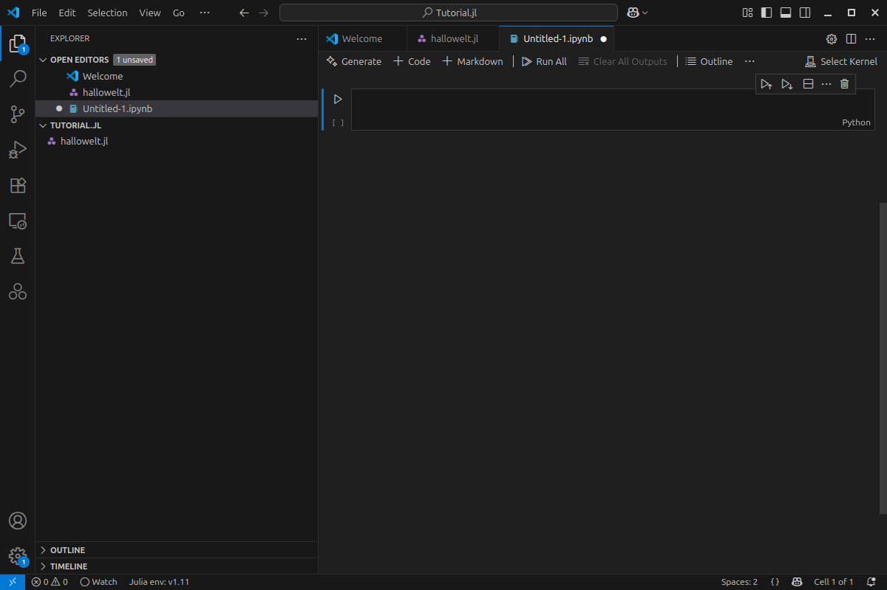
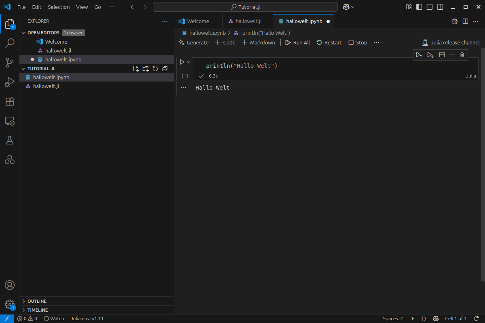

Getting started with Julia#
Julia installieren#
Es gibt verschiedene Wege, die nötigen Programme für die Programmiersprache Julia zu installieren. In der Regel erfolgt dies über den Paketmanager des jeweiligen Betriebssystems. In manchen Fällen ist jedoch eine manuelle Installation notwendig.
Im Folgenden findest du Anleitungen für die gängigsten Betriebssysteme.
Hinweis
Befehle in Typewriter-Schrift im Text, oder abgesetzt in
einer hervorgehobenen Box
können in ein Terminal oder eine Kommandozeile eingegeben werden. Wenn du noch keine Erfahrung mit der Kommandozeile hast, empfehlen wir das Video: „Kommandozeile Lernen in 20 Minuten - Tutorial für Anfänger“ [1]
Windows#
Julia kann direkt über den Microsoft Store installiert werden.
Nutze dafür folgenden Befehl in der Windows-Kommandozeile (cmd.exe oder PowerShell):
winget install julia -s msstore
Alternativ kann auch juliaup verwendet werden (siehe unten).
macOS & Linux#
Für macOS und viele Linux-Distributionen lässt sich Julia bequem über ein Installationsskript von der offiziellen Webseite installieren. Öffne dazu ein Terminal und gib folgenden Befehl ein:
curl -fsSL https://install.julialang.org | sh
Das Skript lädt automatisch die passende Julia-Version herunter und installiert sie.
Weitere Installationsmethoden: juliaup#
Ein modernes Tool zur Verwaltung von Julia-Installationen ist juliaup. Damit kannst du verschiedene Versionen installieren, verwalten und aktualisieren.
Howmebrew (macOS):
brew install juliaupOpenSuse (Linux):
zypper install juliaupcargo (Rust):
cargo install juliaup
juliaup bietet zusätzliche Flexibilität, z. B. parallele Versionen oder automatische Updates - besonders nützlich, wenn du längerfristig mit Julia arbeitest.
Um eine Julia Version hinzuzufügen und als Default zu setzen, gib folgende Befehle in die Komandozeile ein, nachdem du juliaup installiert hast:
juliaup add 1.11
juliaup default 1.11
Dies gibt eine Meldung aus in der Form Configured the default Julia version to be '1.11'.
Julia als Taschenrechner#
Die einfachste Art Julia zu verwenden und damit zu experimentieren ist die interaktive REPL (Read-Eval-Print-Loop) Umgebung. Es ist eine spezielle Eingabeaufforderung in der direkt Julia Code ausgeführt werden kann. Sie lässt sich starten mittels Doppelklick auf das Julia Program, oder durch Ausführen des Befehls julia in einer Komandozeile.

Wie bei einem Taschenrechner gibt man den zu berechnenden Ausdruck ein, z.B. 123.4 + 234.5 und bekommt nach bestätigung mit der [Enter] Taste das Ergebnis angezeigt. Das letzte Antwort lässt sich auch immer wiederholen oder in folgenden Ausdrücken verwenden, mittels der Variable ans
julia> 123.4 + 234.5
357.9
julia> ans + 1
358.9
Editor einrichten#
Für die Entwicklung von Code benötigt man einen Editor. Dieser erlaubt i.d.R. nicht nur einfache Texteingabe, sondern häufig auch die farbliche Darstellung von Code (Syntax-Highlighting), die Integration von Compilern und Programmiertools, sowie Projektverarbeitung. Wir empfehlen VS Code, mit der offiziellen Julia-Erweiterung für diese Vorlesung (oder die Alternative VS Codium)
VS Code + Julia Extension:
Lade Visual Studio Code herunter und installiere es.
Installiere die Julia Extension
VS Code bietet Syntax Highlighting, REPL-Integration, IntelliSense, Plot-Output und mehr - ideal für den Julia-Workflow!






Jupyter Notebooks mit Julia#
Jupyter Notebooks sind ideal, um Julia-Code mit erklärendem Text und Visualisierungen zu kombinieren. Sie werde auch in den Übungen verwendet.
Einrichtung:
Starte Julia und installiere das Paket IJulia:
using Pkg
Pkg.add("IJulia")
Starte ein Notebook:
using IJulia
IJulia.notebook()
Dies öffnet Jupyter in deinem Browser. dort kannst du dann Dateien mit der Endnung .ipynb.
Alternative kann man auch jupyterlab mittels
pip install jupyterlab
installieren und dann im Terminal
jupyter lab
starten.
Julia Code ausführen#
Neben dem Starten eines Julia Notebooks, lässt sich Code auch auf verschiedene andere Weise ausführen.
Interaktive Konsole (REPL): Dies haben wir schon im Kapitel „Julia als Taschenrechner“ gesehen:
Einfach julia im Terminal starten:
julia
du erhälts eine interaktive Umgebung (Read-Eval-Print-Loop - REPL), ideal zum Ausprobieren und starten von Julia code:
julia> println("Hallo Welt")
Hallo Welt
Skripte (.jl-Dateien):
Code kann in einer Datei mit der Endung .jl abgespeichert werden. Diesen kann man entweder direkt im Terminal ausführen:
julia mein_script.jl
oder innerhalb der REPL Umgebung laden:
julia> include("mein_script.jl")
Insbesondere hinsichtlich der Ausgabe von Zwischenergebnissen unterscheiden sich beide Methoden etwas. Es wird empfohlen code über die REPL zu laden anstelle ein Script auszuführen.
Innerhalb von VS Code oder Jupyter:
Der Editor ist mit einer einer integrierten REPL Umgebung verbunden. Scripte lassen sich einfach per Klick auf den Play-Button starten. Zusätzlich erlaub der Editor das öffnen von Jupyter Notebooks (.ipynb-Dateien), in dem einzelne Zellen ausgeführt oder das ganze Notebook abgearbeitet werden kann.

